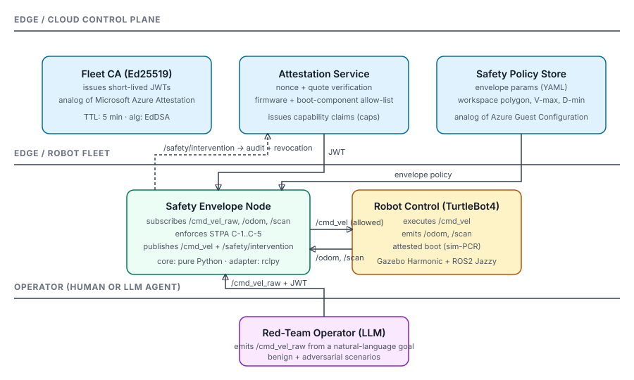

Robot Trust Envelope · weekend prototype
I run Trusted Launch (vTPM + Secure Boot) for Microsoft's Azure Local across two million-plus devices in regulated and air-gapped environments. This project ports those patterns — hardware-rooted attestation, short-lived signed identity, policy-gated commands — onto a simulated robot fleet, then adds two things the cloud doesn't have to think about: STPA-derived runtime safety envelopes and LLM red-team scenarios that try to drive the robot outside those envelopes.
Top-down replay of the recorded Gazebo / sim-shim run. Pick a scenario. Adversarial scenarios are LLM-style goals an operator might give a robot; the envelope intervenes on every one.
Five constraints, each traceable to an STPA Unsafe Control Action.
| ID | Constraint | Default | UCA |
|---|---|---|---|
| C-1 | Bounded linear speed | 0.3 m/s | UCA-1 |
| C-2 | Bounded angular speed | 1.0 rad/s | UCA-1 |
| C-3 | Workspace polygon | unit square | UCA-2 |
| C-4 | Minimum obstacle standoff | 0.40 m | UCA-3 |
| C-5 | Command requires attested JWT | true | UCA-4 |

A short bridge between what I already ship on Azure and what the Microsoft Robotics platform needs.
| Cloud (today) | Robot fleet (this repo) |
|---|---|
| vTPM measured boot, PCR0..7 | Robot agent reports simulated PCR digest |
| UEFI Secure Boot signature chain | firmware_hash allow-list |
| Microsoft Azure Attestation (MAA) | AttestationService + FleetCA |
| AAD-issued attestation token | Short-lived EdDSA JWT (5 min TTL) |
| Conditional Access on workload identity | caps claim gate on /cmd_vel |
| Azure Guest Configuration / Policy | Envelope policy YAML |
| Air-gapped network isolation | Workspace polygon |
| Confidential Computing memory isolation | Runtime envelope on autonomous behavior |
| ICM / Sev1 incident response | /safety/intervention + audit trail |
Honest framing: STPA worksheet is a learning exercise on a toy system, not a certification-grade safety case. The repo's CI runs lint + 10 unit tests covering attestation happy/sad paths and every envelope branch.